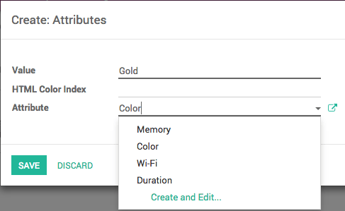
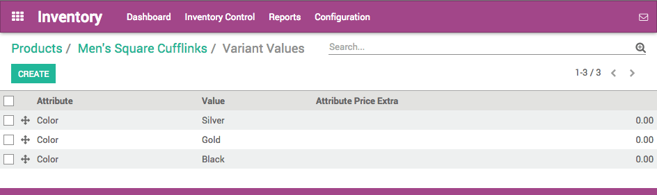

Product variants are used to manage products having different variations, like size, color, etc. It allows managing the product at the template level (for all variations) and at the variant level (specific attributes).
As an example, a company selling t-shirts may have the following product:
B&C T-shirt
- Sizes: S, M, L, XL, XXL
- Colors: Blue, Red, White, Black
In this example, B&C T-Shirt is called the product template and B&C T-Shirt, S, Blue is a variant. Sizes and color are attributes.
The above example has a total of 20 different products (5 sizes x 4 colors). Each one of these products has its own inventory, sales, etc.
Impact of variants
- Barcode: the code and barcode is associated to a variant, not the template. Every variant may have its own barcode / SKU.
- Price: every product variant has its own public price that is computed based on the template price ($20) with an optional extra for every variant (+$3 for color red). However, you can define pricelist rules that apply on the template or the variant.
- Inventory: the inventory is managed by product variant. You don't own t-shirts, you only own "T-shirts, S, Red", or "T-Shirts, M, Blue". For information purpose, on the product template form, you get the inventory that is the sum of every variant. (but the actual inventory is computed by variant)
- Picture: the picture is related to the variant, every variation of a product may have its own primary picture.
- Other fields: most of the other fields belongs to the product template. If you update them, it updates automatically all the variants. (example: Income Account, Taxes)
Should you use variants?
When should you use variants?
Using variants has the following impacts:
- eCommerce: in your online shop, the customer will only see product templates in the catalog page. Once the visitor click on such a product, he will have options to choose amongst the variants (colors, sizes, …)
- Manufacturing: Using variants allows to define only one bill of material for a product template and slight variations for some of the variants. Example: instead of creating a Bill of Material for "T-shirt, Red, S", you create a bill of material for "T-shirt" and add some lines that are specific to the dimension S, and other lines specific to the color Red.
- Pricing: The default price of a product is computed using the price of the product template and add the optional extra price on each dimension of the variant. This way, variant prices are easier to maintain since you don't have to set the price for every variant. However, it's possible to create pricelist rules to fix price per variants too.
When should you avoid using variants?
Using variants may add a level of complexity on the way you use Odoo. You should consider using variants only if you need it to reduce the complexity of managing lots of products that are similars.
As an example, importing your initial product catalog is more complex if you use variants. You can't just import a list of products, you must import product templates and all their related variations.
In addition to that, you should also carefully select the dimensions that you manage as separate product templates and those as variants. As an example, a company having these products:
- Quality: T-Shirts, Polos, Shirts
- Color: Red, Blue
- Size: S, M, L, XL
In such a use case, you could create 1 template with three dimensions of variants (Layout, T-Shirts, Polos). But, it's recommended to create two different product templates as T-shirts may highly differ from polos or shirts and customer expect to see these as two different products in the e-Commerce:
Product Template: T-shirt
- Color: Red, Blue
- Size: S, M, L, XL
Product Template: Polos
- Color: Red, Blue
- Size: S, M, L, XL
Configuration
Activate the variant feature
Before you can use product variants, you must first activate the product variants in the settings. To do so, you must go to the Sales app. In the menu , locate the Products Variants line, and tick the option Products can have several attributes, then click on Apply.

Creating products with variants
Once you have activated the variant option, you can add variants to your products. To do so, go to the Sales module, . It is also accessible from the Purchase and inventory modules.
Now, click on the product you wish to add variants to.
In the product page, a new tab called Variants has appeared. The number in purple written on top is the number of variants this product currently has. To add new variants, click on the tile. In the new window, click on Create.
In Attributes, click on the rolldown menu and select the type of variance you wish to add. If the variant does not yet exist, you can create it on the fly by clicking on Create and edit…

In the Attributes window, the Value field is the description of the attribute such as Green, Plastic or 32GB. The Attribute field is the type of variant such as Color, Material or Memory.
You can add a cost for the variant on the fly by adding it in the Attribute Price Extra field, or choose to modify it later. Click on Save.
You can also add a different barcode and internal reference to the variant.
When you have entered all the specifications of the variant, click on Save.
Managing Product Variants
Introduction
The examples below are all based on this product template that has two variant attributes :
T-Shirt B&C
- Color: Red, Blue, White
- Size: S, M, L, XL, XXL
Managing combination possibilities
By default, with the above product template, you get 15 different products (3 colors, 5 sizes). If the XXL size does not exist for red and blue t-shirts, you can deactivate this product variant.
To do this, click on the Variants button, select the XXL, White T-shirt. From the product form, uncheck the Active box of the T-shirt White, XXL.

Tip
That deactivating a product is different than having an inventory of 0.
Setting a price per variant
You can add a cost over the main price for some of the variants of a product.
Once you have activated the variant option, you can add variants to your products. To do so, go to the Sales module, open and click on the product you want to modify. Click on the Variant Prices button to access the list of variant values.
Click on the variant name you wish to add a value to, to make the 3 fields editable. In the Attribute Price Extra field, add the cost of the variant that will be added to the original price.
When you have entered all the extra values, click on Save.